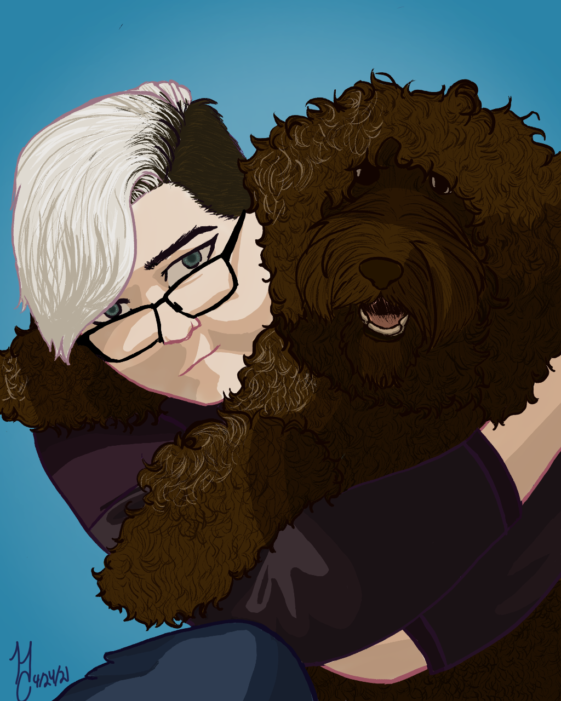
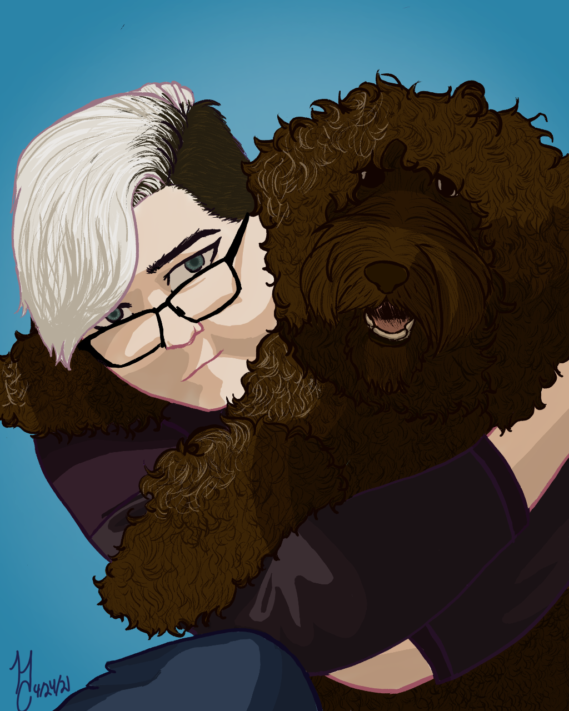

When Covid hit, I spent most of my time drawing digitally. Once again, most of the projects were unfinished but the ones that I did finish, I was and still am super proud of. As Ive grown these past two years, I obviously see flaws even in my newer projects but being able to look back at my old art and compare it to my newer art, Im incredibly proud of where I am and Im excited to keep learning and growing as an artist.
 
